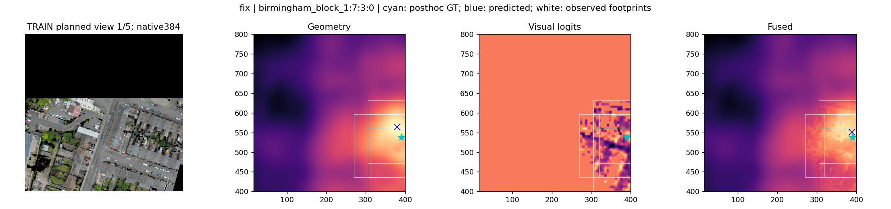
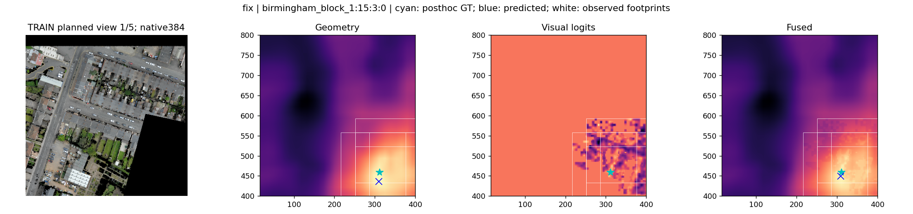
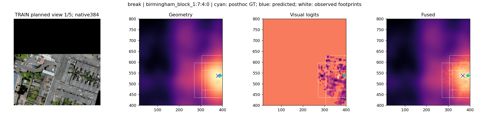
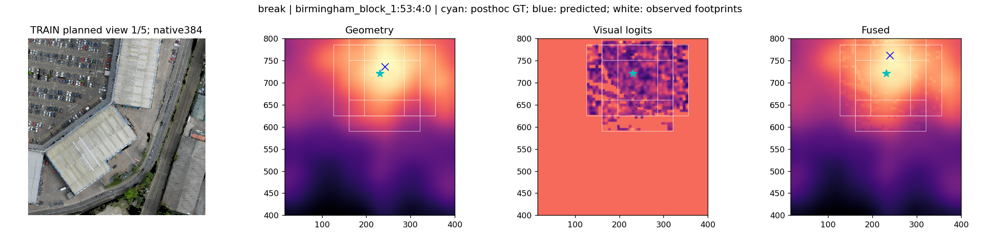
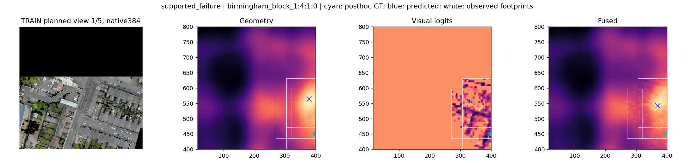
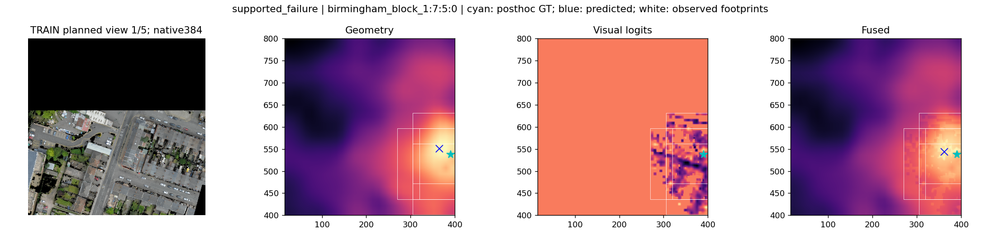

最终权重TRAIN真实RGB诊断
公开地标规划的离线观测，不是闭环。GT只用于事后评分；不是实例识别准确率。
fix: birmingham_block_1:7:3:0

原生RGBfix: birmingham_block_1:15:3:0

原生RGBbreak: birmingham_block_1:7:4:0

原生RGBbreak: birmingham_block_1:53:4:0

原生RGBsupported_failure: birmingham_block_1:4:1:0

原生RGBsupported_failure: birmingham_block_1:7:5:0

原生RGB